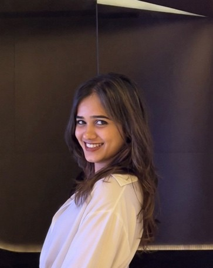

Nithya Doresha
Hi! I'm Nithya. I've spent the last three years working with data
across sales, business intelligence and demand forecasting.
I enjoy getting into the details of a business problem, figuring
out what the data is telling us, and building something useful from it.
Most recently, I worked with global Sales and Marketing teams at
Vonage. Before that, I worked on forecasting and analytics for
FMCG businesses at Ganit.

A little about me
My experience sits at the intersection of analytics and business. At Vonage, I was the BI and Analytics resource supporting global Sales and Marketing. I worked on Snowflake models, reporting automation and AI-powered tools that helped teams get answers without having to wait for a report.
At Ganit, I worked on demand and price forecasting for FMCG products. That involved exploring data, building forecasting models and understanding how better predictions could improve inventory and planning.
I studied Industrial Engineering at JSS Science and Technology University. I'm now in Sweden and looking forward to joining a team where I can keep learning and contribute through data.
Tools I work with
Programming & Data
Python, SQL, Pandas, NumPy, PostgreSQL, Snowflake
Business Intelligence
Power BI, Tableau, Streamlit, KPI reporting, data modelling
AI & Machine Learning
Generative AI, LLMs, AI agents, AWS Bedrock, Scikit-learn
Cloud & Data Engineering
AWS S3, Lambda, RDS, ETL and data pipelines
Analytics Methods
Exploratory analysis, A/B testing, SHAP, time-series forecasting, hypothesis testing
Business Areas
Revenue analytics, sales analytics, demand forecasting, inventory analytics
Selected work
Retail Sales Analytics
An end-to-end project using retail transaction data. I worked through data cleaning, quality checks, exploratory analysis and SQL queries to understand sales, customers and product profitability.
Sales Reporting & AI Agents
Built reporting solutions and AI agents connecting business information from multiple sources. The tools supported over 2,000 users and helped reduce recurring BI requests.
FMCG Demand Forecasting
Worked on demand and price forecasting for more than 1,400 products, applying time-series models and machine learning to support inventory planning.
Revenue & Win/Loss Analytics
Developed analytical models and reporting to improve pipeline visibility and help commercial teams understand revenue performance and win/loss trends.
Where I've worked
Data Analyst I
- Worked as the BI and Analytics resource supporting global Sales and Marketing teams.
- Built Snowflake data models, semantic layers, automated reporting and Streamlit applications.
- Developed and supported 14 AI agents and analytics tools used by more than 2,000 users.
- Helped reduce recurring BI requests by 40% and manual reporting effort by 40–60%.
- Contributed to revenue, pipeline and win/loss analytics for business stakeholders.
Senior Data Analyst
- Worked on demand and price forecasting for more than 1,400 FMCG products.
- Used Python, SQL, ARIMA, Prophet and LightGBM for forecasting and analysis.
- Contributed to a 42% improvement in forecast accuracy and 35% fewer stockouts.
- Worked on AWS data workflows and AI-powered business applications.
- Created dashboards to monitor operational and commercial KPIs.
Education
Bachelor of Technology in Industrial Engineering
JSS Science and Technology University
2019 – 2023 · GPA 9.1 / 10
Get in touch
I'm currently exploring opportunities in data analytics, business intelligence, analytics engineering and data & AI across Sweden. If you'd like to talk about a role or simply connect, feel free to reach out.